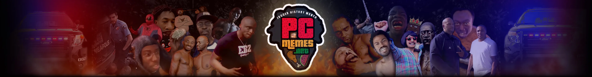

STREAM CLIPPER / v1.3
Having trouble?
Stale cache or cookies can prevent the clipper from running. A quick browser reset almost always fixes it:
Still stuck? Try a different browser or disable any extensions (ad blockers, VPNs) for this site.